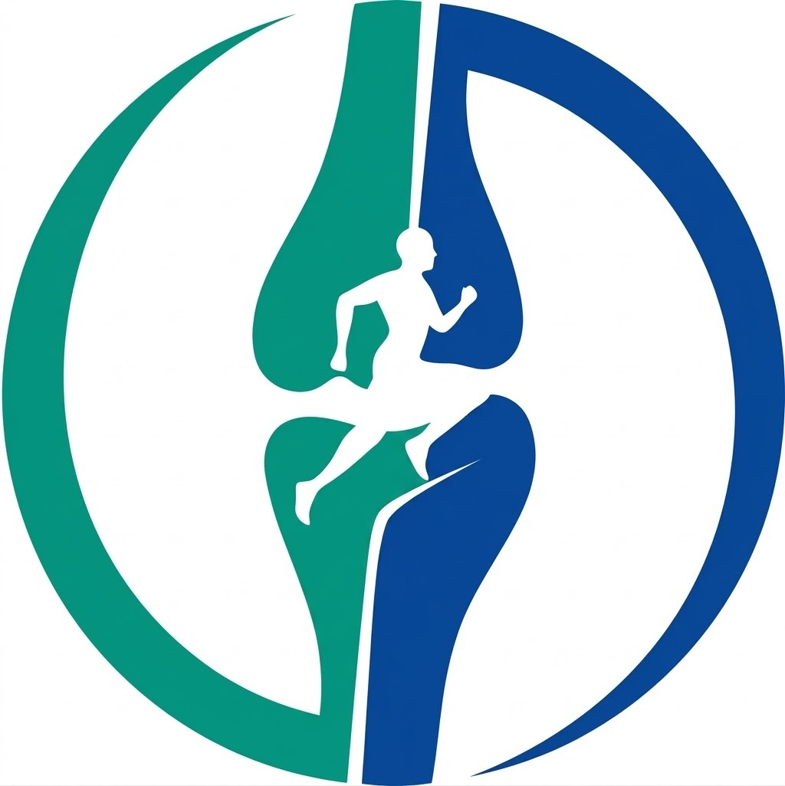

Especialista em Pós-Operatório
e Reabilitação Ortopédica.
Atendimento especializado no tratamento de dores musculoesqueléticas, reabilitação articular e muscular. Foco no pós-operatório de joelho e recuperação avançada, no conforto de sua casa em Salvador - BA.
Atendimento especializado para recuperação e performance
João Queiroz é fisioterapeuta com sólida experiência, tendo atuado no Camaçari Esporte Clube de Salvador. Especialista em fisioterapia ortopédica e esportiva,
oferece tratamentos individualizados para cada paciente com foco em resultados reais e duradouros.
Os atendimentos são realizados de forma domiciliar em Salvador - BA,
proporcionando mais conforto, praticidade e acompanhamento próximo durante todo o processo de recuperação.
O objetivo é ajudar cada paciente a recuperar movimentos, aliviar dores, prevenir novas lesões e alcançar
melhor desempenho físico de forma segura e eficiente.
Tratamentos especializados com protocolos individualizados para cada paciente,
garantindo a melhor recuperação e desempenho possíveis.
Fisioterapia Ortopédica
Tratamento especializado para recuperação de lesões ortopédicas, dores crônicas e reabilitação funcional,
com foco na melhora da mobilidade e qualidade de vida.
Atendimento voltado para atletas e praticantes de atividade física que desejam melhorar o desempenho,
prevenir lesões e retornar ao esporte com segurança e alta performance.
O atendimento é realizado diretamente na sua residência em Salvador - BA,
garantindo conforto, praticidade e acompanhamento individualizado em cada sessão.
Um processo claro e humanizado, pensado para a sua melhor recuperação desde o primeiro contato.
01
Avaliação Completa
Início com uma avaliação fisioterapêutica completa para entender sua condição, histórico e objetivos.
02
Plano Individualizado
Definição de um plano de tratamento personalizado, adaptado às suas necessidades e metas específicas.
03
Acompanhamento Contínuo
Monitoramento constante da sua evolução com ajustes no protocolo para garantir os melhores resultados.
04
Retorno Seguro
Alta com critérios funcionais claros para o retorno seguro às atividades diárias e esportivas.
Por que nos escolher
Diferenciais do atendimento
Atendimento Personalizado
Cada sessão é planejada exclusivamente para você, respeitando suas limitações, objetivos e ritmo de evolução.
Conforto do Lar
Sem filas, sem deslocamentos. O fisioterapeuta vai até você, promovendo um ambiente familiar e tranquilo para a recuperação.
Foco em Resultados
Protocolos baseados em evidências científicas com acompanhamento contínuo da evolução funcional do paciente.
Atendimento Humanizado
Relação próxima e empática com cada paciente, entendendo suas necessidades além dos sintomas físicos.
Performance & Qualidade de Vida
Tratamento que vai além da recuperação: foco em melhorar sua performance e qualidade de vida a longo prazo.
Flexibilidade de Horários
Agendamento flexível adaptado à sua rotina, sem necessidade de reorganizar sua agenda para se tratar.

Agende sua avaliação fisioterapêutica
Recupere sua mobilidade, reduza dores e volte ao seu melhor desempenho com acompanhamento especializado
em fisioterapia ortopédica e esportiva em Salvador - BA.
Atendimento domiciliar com foco em recuperação funcional, prevenção de lesões e alta performance.